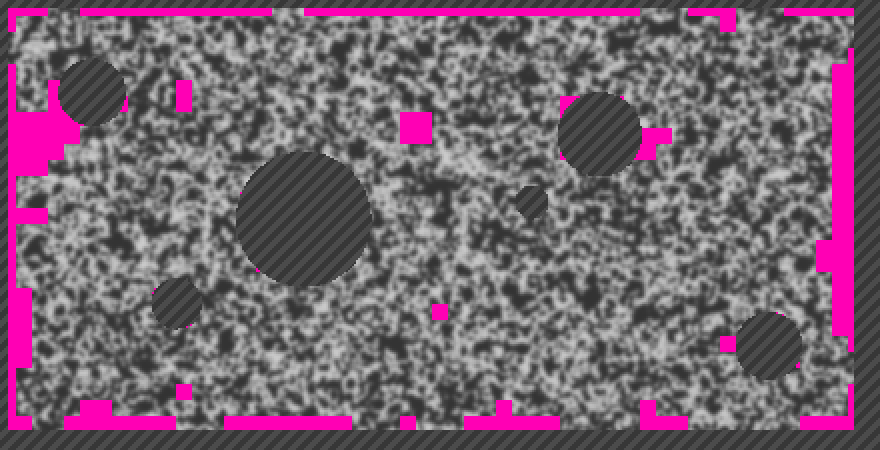
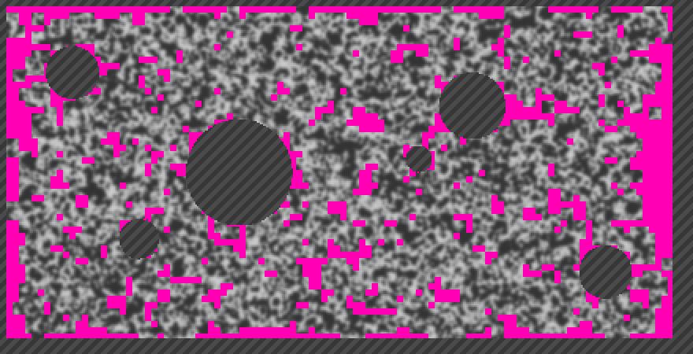

Nouveau : reprise des bords extérieurs, avant/après
Calcul sur les images originales, sans correction de contour. Les fenêtres sont limitées à la matière visible depuis leur centre. Les graines viennent de voisins résolus, avec transport des six paramètres et respect des liens du masque.
Magenta : matière non couverte par une fenêtre retenue. Hachures : trous et extérieur non évalués. La forme des zones hachurées ne prouve aucun recalage des trous. Il faut regarder le mouchetis.
Les fenêtres de 12 pixels constituent le meilleur compromis de couverture dans ce pilote. La bande 0–4 pixels reste mal recalée (corrélation 0,640 sur 98,2 % des pixels). Le passage à 8 pixels réduit la couverture à 66,0 % dans cette bande : il ne résout pas le problème.

| Support (px) | Distance au trou (px) | Centres retenus / admissibles | Pixels couverts / matière | Propagation | Ancienne correction de contour |
|---|---|---|---|---|---|
| 16 | 0–4 | 25/36 | 2554/2844 | 0.550 | 0.412 |
| 16 | 4–8 | 42/57 | 3422/3637 | 0.873 | 0.615 |
| 16 | 8–16 | 116/140 | 8466/8718 | 0.890 | 0.783 |
| 12 | 0–4 | 85/157 | 2793/2844 | 0.640 | 0.386 |
| 12 | 4–8 | 174/226 | 3635/3637 | 0.883 | 0.613 |
| 12 | 8–16 | 386/547 | 8679/8718 | 0.900 | 0.775 |
| 8 | 0–4 | 55/153 | 1878/2844 | 0.703 | 0.440 |
| 8 | 4–8 | 102/224 | 3069/3637 | 0.875 | 0.607 |
| 8 | 8–16 | 262/546 | 7715/8718 | 0.893 | 0.783 |
Chaque corrélation regroupe les intensités de la bande couverte, ce n'est pas un score de convergence. Les dénominateurs diffèrent entre supports.
Le remapping combine les déplacements locaux seulement sur leurs supports validés. Cet assemblage reste imparfait : les différences finies détectent des déterminants non positifs dans le champ combiné (29 pixels en 16, 125 en 12), même si les affines locales retenues ont chacune un déterminant positif. Il n'est pas qualifié comme transformation matérielle globale. Les graines locales sont exportées séparément.


Résultats bruts · Graines locales 12 pixels · Retour à la page précédente